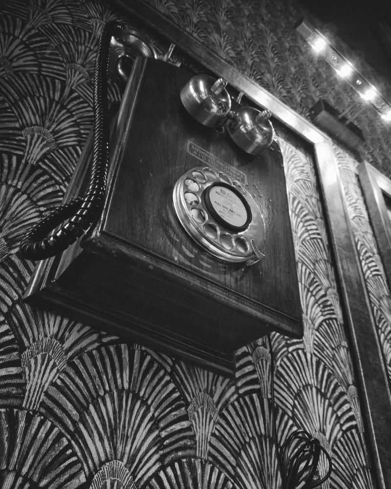
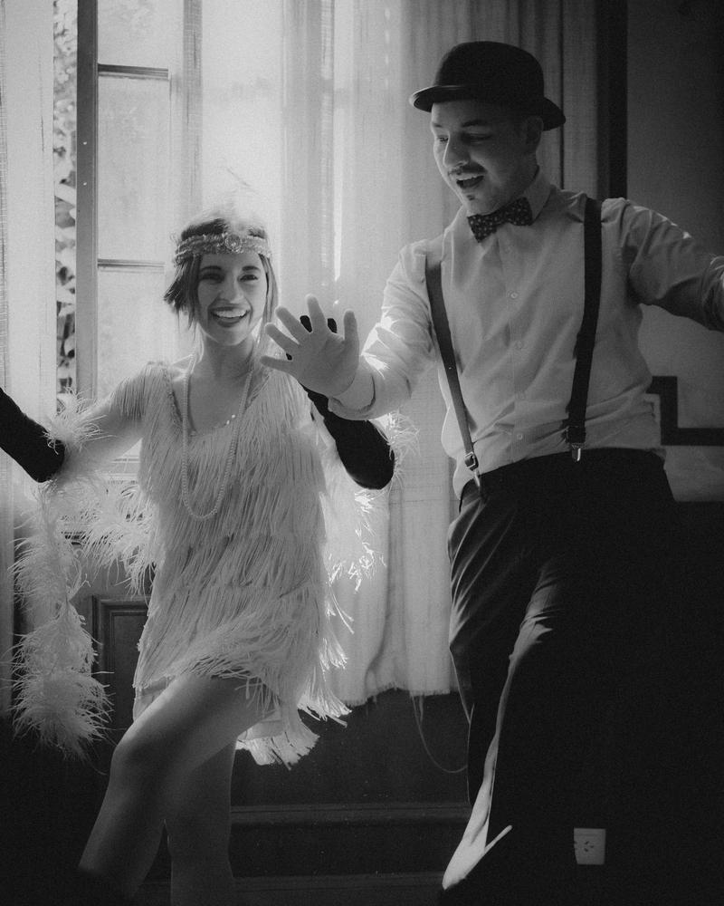
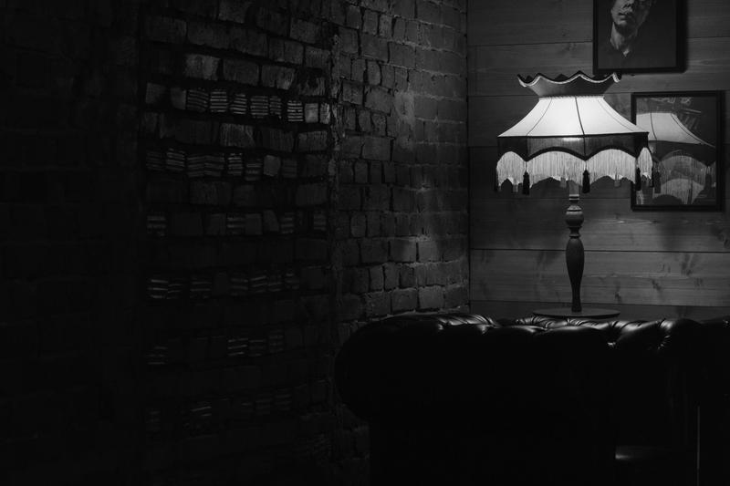
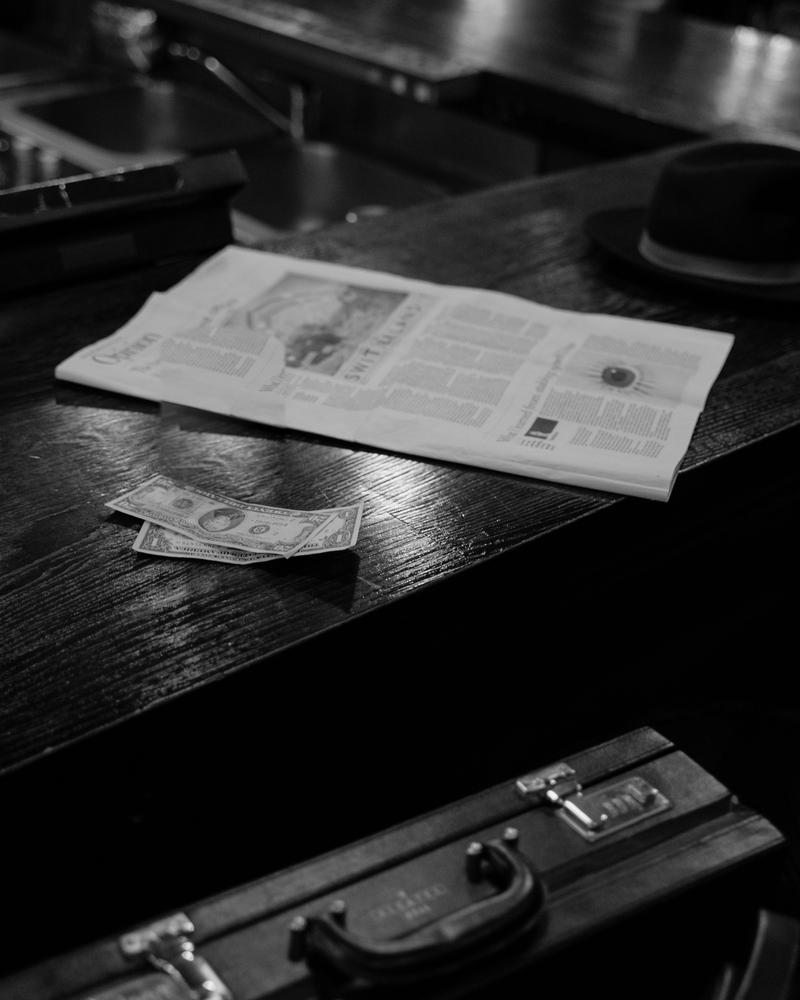

Alta · the cellar · tonight
You found us. What you see here stays between us.
The story
In the twenties, in the country across the sea, they closed the bars and thought people would stop meeting. People did not stop meeting. They simply went down one flight of stairs, knocked three times and gave a name that was not their own. Down there, behind doors without signs, they sat closer, spoke lower and drank better than ever before.
Alibi is our flight of stairs. A bar in a cellar in Alta town centre, furnished for those who would rather have a good conversation than a good picture of it. The pace here is slow and the music slower: dimmed lights, wood that has been allowed to darken, and cocktails made as though someone might still knock on the door and ask what we are up to.
We are not going to shout about this place. We don't need to. The right people always find their way.

-
-

-
The house
Eat upstairs. Nightclub next door. Talk here.
One house, three places: Raus at street level, Tåkt and Alibi side by side in the cellar below. Our neighbours are a step away – the rest of the evening takes care of itself.
-
Photo to come
Raus
Arctic tapas at street level. It's the house you see from the street.
Wed–Thu 15–22 · Fri–Sat 15–23
-
Photo to come
Tåkt
Nightclub in the cellar, right next door to us. They take care of the dancing.
Fri–Sat 22–03
-

Alibi
Bar in the same cellar. Slow pace, slower music, good conversation.
Opening hours to come
You are here.
The menu
Our own handwriting. Some of these we made up ourselves.
-
Æventonic
NOK 15930 clGin Mare · Fever-Tree Mediterranean Tonic · rosemary
House special. Mediterranean gin, tonic with herbs, and a sprig of rosemary that smells of somewhere warmer.
-
Aurora Fizz
NOK 15925 clGin · blue curaçao · lemon · sugar syrup · soda · lemon peel
Northern lights in the cellar. It glows blue without shouting about it.
-
Basil Smash
NOK 15915 clGin · lemon · sugar syrup · fresh basil
Basil crushed in the bottom, gin on top. Green, fresh and a little cheeky.
-
Manito
NOK 15925 clWhite rum · Mannsverk Farm strawberries · mint · lime · sugar syrup · soda · strawberry
The mojito's strawberry-loving relative. The mint is picked in here.
-
Mezcalita
NOK 15915 clMezcal · triple sec · lime · sugar syrup · salt · flamed lime
A margarita with smoke in it. The lime wedge passes through the flame on its way in.
-
Maltfassioned
NOK 15910 clSingle malt · Angostura · sugar cube · orange
An Old Fashioned that took a wrong turn and ended up in Scotland.
-
Canyon Tea
NOK 15925 clVodka · triple sec · gin · white rum · mezcal · lemon · sugar syrup · Coca-Cola · orange
Five bottles and a cola. We'll say no more.
There is an alcohol-free version of everything. Ask whoever is behind the bar.
Some of our drinks contain raw egg white. Tell us about any allergies and we will find you something else.
We grow the mint, basil and rosemary ourselves.
We have a . Those who know the password know what to do.
The hidden menu
Two more, for those who asked nicely. These are not on the menu, because this is not the menu.
-
Mandaquiri
NOK 159White rum · Mannsverk Farm strawberries · lime
A daiquiri, but red. Short, cold and straight to the point.
-
Adventure
NOK 159Gin · triple sec · lime · egg white
Shaken until the foam settles like a lid. Looks innocent.
Find us
Sentrumsparken 2, 9510 Alta.
The cellar. A door without a sign – almost.
Look for the restaurant Raus (opens in a new tab) – you can see it from the street. Beneath it lies the cellar: if you can hear the bass, you are standing at Tåkt (opens in a new tab). Our door is the quiet one.
You will find us in the same building as Canyon Hotell (opens in a new tab).

Practical
- Location
- Sentrumsparken 2, 9510 Alta. The cellar – the way in is described under ‘Find us’.
- Opening hours
- To come. Cellars keep their own hours.
- Age limit
- To come. Bring ID regardless.
- Contact
- To come. Until then: knock.
- Social media